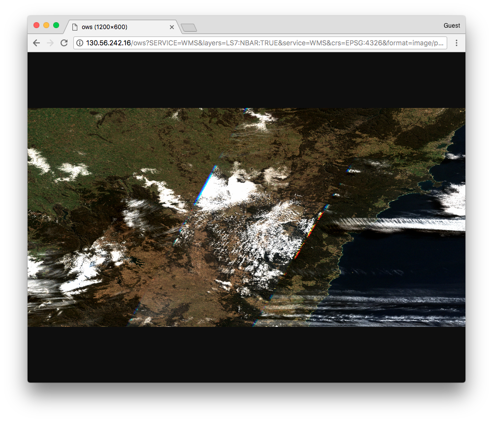

Web Map Service (WMS)¶
NCI’s GSKY Data Server supports the Open Geospatial Consortium (OGC) Web Map Service (WMS), which is a standard protocol for serving geospatial data as images (e.g., PNG).
Constructing WMS Requests¶
To request a spatial subset of data through GSKY using WMS, a GetMap URL defining the subset has to be constructed. This URL can be used within a web browser to communicate to the GSKY Data Server, which will return the requested map image of the subset.
For example, the GetMap request takes the following form:
http://gsky.nci.org.au/ows?service=WMS&version=1.3.0&request=GetMap&layers=value&crs=value &styles=value &format=value &bbox=value&width=value &height=value &colorscalerange=value &transparent=value&time=value
where red indicates required fields, blue are optional, and green are where input values relevant to the dataset and user request need to be defined.
GetMap parameters:
| Parameter | Required/Optional | Input |
|---|---|---|
| service | Required | WMS |
| version | Required | 1.1.1 **, 1.3.0 (default) |
| request | Required | GetMap |
| layers | Required | <variable> |
| crs | Required | <crs_value> |
| styles | Required | <style_name> |
| format | Required | image/png, image/png;mode=32bit, image/gif, image/jpeg |
| bbox | Required | <ymin,xmin,ymax,xmax> |
| width | Required | Image width in pixels |
| height | Required | Image height in pixels |
| colorscalerange | Optional | <min,max> |
| transparent | Optional | True, False |
| time | Optional | <time_value> |
** Syntax differences for v1.1.1 GetMap requests:
- Use
srcin place ofcrs- The order of
bboxvalues are:<xmin,ymin,xmax,ymax>
WMS GetCapabilities request¶
Where do you find valid input values?
In order to contruct the GetMap URL, a GetCapabilities request can be made to the server. This requests returns an xml describing the available WMS parameters (metadata, services, and data) made available by NCI’s GSKY server.
GetCapabilities example:

WMS GetMap request¶
Using the information returned from a GetCapabilities request, a GetMap URL can be constructed and then entered into the address bar of any web browser.
Example GetMap request:
If the URL is correctly formed, the requested map will be displayed.
